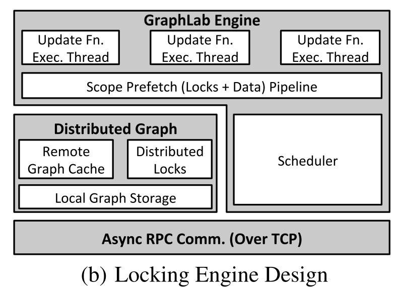

-
Motivations:
-
Existing
high-level data-parallel frameworks (e.g. MapReduce) do not fit many data mining and machine learning
paradigm and can usually lead to inefficient learning systems
-
Preliminary
Works:
-
GraphLab:
asynchronous, dynamic, graph-parallel, shared-memory, strong data consistency guarantee but standalone
-
Contributions:
Distributed GraphLab
-
Summarized
common properties of MLDM algorithms and existing frameworks' limitations
-
Graph
Structured Computation
-
enable
dependent computation
-
computation
is defined as kernels that run on each vertex
-
e.g.
Pregel, GraphLab
-
Asynchronous
Iterative Computation
-
Dynamic
Computation
-
Prioritizing
computation can further accelerate the convergence
-
e.g.
Pregel allow a limited form of dynamic computation by allowing some vertices to skip computation
on each super-step; GraphLab allows adaptively prioritize computation
-
Serializability
-
reduce
the complexity introduced by concurrency
-
Extended
GraphLab to distributed setting with 2 different implementations, while preserving strong data consistency
guarantee
-
Reduced
network congestion and network latency effects with Graph-based pipeline locking, data
versioning
-
Fault
tolerance with adapted Chandy-Lamport snapshot algorithm
-
Evaluated
on large scale EC2 deployment and achieved 1-2 orders of magnitude performance gain over Hadoop-based
implementations
-
Terminologies:
-
MLDM:
Machine Learning and Data Mining
-
data
versioning
-
pipelined
distributed locking
-
BSP:
Bulk Synchronous Parallel abstraction
-
scope
of a vertex v: is the data stored in v, as well as the data stored in all adjacent vertices and adjacent
edges
-
serializable
execution: there exists a corresponding serial schedule of update functions that when executed, it
produces the same values in the data graph
-
atom:
each part of the k over-partitioned data graph
-
ghost:
the set of vertices and edges adjacent to the partition boundary
-
Distributed GraphLab abstraction components
-
3
main parts:
-
Data
Graph G = (V,E,D)
-
repr
the user-modifiable program state, stores both the mutable user-defined data and encodes the
sparse computational dependencies
-
D:
user-defined data, e.g. model parameters, algorithm state, statistical data, etc. and can be
associated with each vertex or each edge in the graph
-
Caveats: While the graph data is mutable, the
structure is static and cannot be
changed during execution
-
Update
Function
-
repr
user computation and operate on
the data graph by transforming
data in small overlapping contexts called scopes
-
a
stateless procedure that modifies
the data within the scope of a vertex and schedules the future execution of update functions on
other vertices
-
Take
input of a vertex and its scope, Output the new version of the data in the scope as well as a set
of vertices T, each vertex of T will eventually execute the update function
-
By
controlling the return value of T, GraphLab update function can efficiently express adaptive
computation e.g. return neighbors only when it has made a substantial change to its local
data
-
Sync
Operation
-
concurrently
maintains global aggregates
-
GraphLab
Execution Model
-
Input: data graph G = (V,E,D), update function,
initial set of vertices T to be executed
-
Return on completion: resulting data graph and
global values
-
Optimizations:
-
relax
the execution ordering requirements of the shared memory GraphLab (standalone) and allow the
run-time to determine the best
order of execution [as long as all vertices in T are eventually
executetd]
-
e.g.
account for network communication latency
-
allow
prioritization over vertices in T, the run-time may use these priorities with system-level
objectives to optimize the execution order
-
About
Serializability
-
achieve
parallel execution by allowing multiple processors to execute the same loop on the same graph,
removing and executing different vertices simultaneously while ensuring isolation of overlapping
computation
-
Consistency
Models
-
Full
Consistency
-
ensure
that the scopes of concurrently executing update functions do not overlap
-
limits
the potential parallelism as it implicitly imposes the constraint that concurrently executing
update functions must be at least two vertices apart
-
-
Edge
Consistency
-
ensures
each update function has exclusive read-write access to its vertex and adjacent edges, but read-only access to adjacent vertices
-
increase
parallelism by allowing update functions with slightly overlapping scopes to safely run in
parallel
-
-
Vertex
Consistency
-
allow
all update functions to be run in parallel and hence provides maximum parallelism
-
-
About
sync operation and global values
-
global
values can be read by update functions but have to be written using "sync operations"
-
Sync
operation [one of the 3 components in the abstraction model]
-
an
associative commutative sum defined over all
the scopes in the graph and runs
continuously in the background to maintain updated estimates of the global value
-
the
"finalize" phase enable tasks like normalization
-
ensuring
serializability of the sync operation wrt to update functions are costly, GraphLab provides two
options: Consistent Sync
Computation and Inconsistent
Sync Computation
-
-
Distributed
GraphLab Design
-
Focused
on distributed in-memory setting
-
require
entire graph and all program states to reside in RAM
-
because
of the inherently random memory access pattern common to dynamic async graph algorithms
-
Written
in C++
-
1.
The distributed data graph
-
Challenges
-
balance
computation, communication, storage
-
i.e.
need to construct balanced partitioning
of the data graph that minimize # of edges that cross between
machines
-
be
able to quickly load the data graph on varying sized cloud deployments
-
Solution
-
A
graph representation based on two-phased
partitioning which can be efficiently load-balanced on arbitrary cluster sizes
-
Benefits:
-
allow
reuse of the same graph partition computation for different # of machines without a full
repartition step
-
Phase
1: Initialization Phase:
-
Over-partition
the graph using [domain specific knowledge or a distributed graph partitioning heuristic]
into k parts, k is much larger than # of machines [which is why we call it
"over-partitioning"]
-
each
of the k parts is called an "atom"
-
Each
atom
-
is
stored as a separate file on a distributed storage system e.g. HDFS, AWS
S3
-
the
atom file is a simple binary compressed journal of graph generating commands
-
stores
the information regarding "ghosts": the set of vertices and edges
adjacent to the partition boundary
-
The
connectivity structure
and file locations
of the k atoms are stored in an "atom index" file as a
meta-graph with k vertices
and edges encoding the connectivity of the atoms
-
Phase
2: GraphLab Execution Phase
-
Perform
a fast balanced
partition of the meta-graph over the number of physical
machines
-
the
process of "distributed loading"
-
Each
machine then constructs its local
portion of the graph by replay the journal from each of its assigned atoms
-
the
playback procedure also instantiates the ghost of the local partition in
memory
-
the
instantiated ghosts are used as caches for the true counterparts across the
network
-
cache
coherence is managed by versioning tools and therefore eliminate the transmission of
unchanged/constant data
-
-
2.
The distributed GraphLab Engine
(distributed execution
model)
-
OBJ
-
Execute
update functions and sync operations
-
Maintain
the set of scheduled vertices T
-
Ensure
Serializability wrt the appropriate consistency model [full/edge/vertex]
-
Tradeoffs
b/w performance and expressiveness
-
relaxed
execution ordering enables more efficient distributed execution
-
evaluated
using two different Engines: Chromatic Engine and Locking Engine
-
Chromatic
Engine
-
low-overhead
but does not provide sufficient
scheduling flexibility and presupposes the availability of a graph coloring
-
executes
the vertex set T partially
asynchronous by using vertex coloring, still operate in synchronous color-steps
-
Vertex
coloring assigns a color to each vertex s.t. no adjacent vertices share the same
color
-
"Color-Step"
is defined in analogy to the super-step in the BSP model to describe the process of
updating all the vertices within the
single color and communicating all changes
-
Within
each color-step, communicate changes asynchronously as they are made, thus efficiently
use both network bandwidth and processor time
-
Have
to ensure all modifications are communicated before moving to the next color
-
"Full
communication barrier" b/w color-steps
-
Sync operation can then be run safely b/w
color steps
-
To
satisfy Edge
Consisency Model
-
Given
a vertex coloring scheme of the data graph, we can satisfy the "edge consistency" by executing synchronously all vertices of the same color in the vertex set T before proceeding to the
next color
-
To
satisfy Full
Consistency Model
-
Change
coloring scheme by constructing a second-order vertex coloring [i.e. no vertex
shares the same color as any of its two-hop neighbors]
-
To
satisfy Vertex
Consistency Model
-
Assign
all vertices the same color
-
A
reasonable quality vertex coloring scheme can be constructed quickly using graph coloring
heuristics e.g. greedy coloring
-
Locking
Engine
-
more
expressive
-
executes
T fully asynchronous and support vertex priorities
-
achieve
distributed mutual exclusion by associating a reader-writer lock with each vertex
-
To
satisfy Full Consistency Model
-
acquire
a write lock on the central vertex and all adjacent vertices
-
To
satisfy Edge Consistency Model
-
acquire
a write lock on the central vertex and read lock on each of the adjacent vertex
-
To
satisfy Vertex Consistency Model
-
acquire
a write-lock on the central vertex of each requested scope
-
To
avoid deadlocks...
-
need
to acquire locks sequentially following a canonical order induced by (owner(vid),
vid)
-
Updates
are restricted to the local machine
-
Each
worker thread on each machine evaluates the loop until the scheduler is empty and terminate using
the distributed consensus algorithm
-
Rely
on optimization techniques to reduce latency
and hide effects
-
1.
ghosting provides caching
capability eliminates the need to transmit or wait on data that has not changed
remotely
-
2.
pipelined locking and
prefetching: all lock requests and sync calls are pipelined s.t. allow each machine to request locks and
data for many scopes simultaneously and evaluate the update function only when the scope is
ready
-
Experimental
results show that this engine provides strong, nearly linear scalability, and increasing pipeline
length will reduce runtime
-

-
Fault
Tolerance
-
use
a distributed checkpoint mechanism
-
in
the event of failure, recover from the last checkpoint
-
two
strategies to construct distributed snapshots: Sync Method and Async Method
-
Synchronous
Snapshot
-
suspend
execution of update functions
-
flush
all communication channels
-
save
all modified data since the last snapshot into DFS
-
Inefficient
as of the synchronous computation
-
Asynchronous
Snapshot based on Chandy-Lamport algorithm
-
expressed
as an update function and
guarantee a consistent snapshot under the following conditions
-
edge
consistency is used on all update functions
-
Schedule
completes before the scope is unlocked
-
the
snapshot update is prioritized over other update functions
-
Both
sync and async method are initiated att fixed intervals
-
interval
is chosen to balance the cost of constructing the checkpoint and the computation lost
since the last checkpoint in the event of failure
-
Applications
-
Collaborative
filtering for Netflix movie recommendation
-
Video
Co-Segmentation (CoSeg)
-
Named
Entity Recognition (NER)